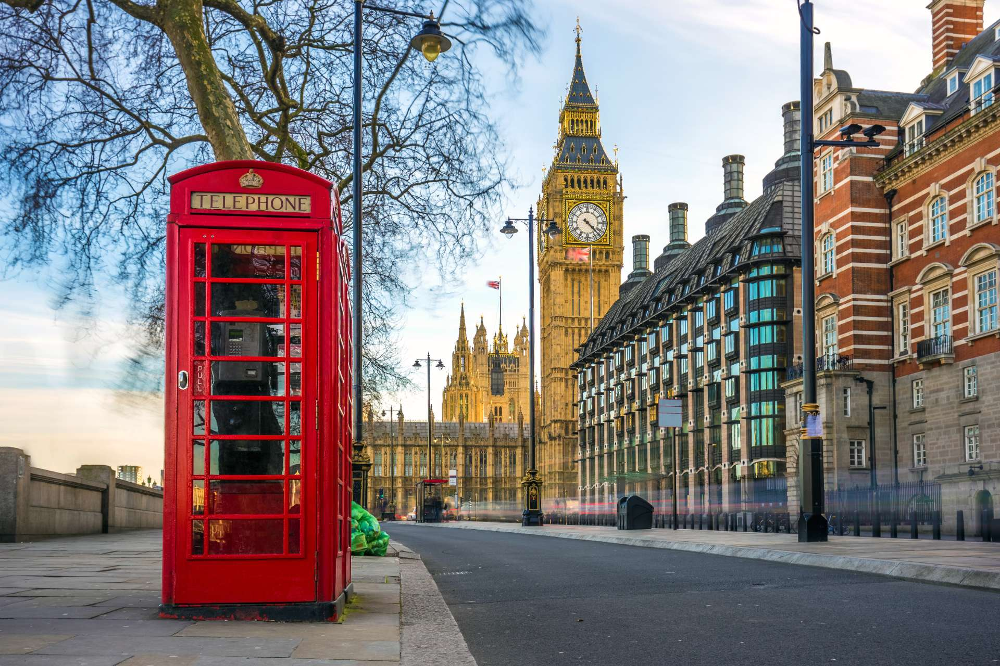

London,
England
London is one of the world's most visited cities and as a result has become a thriving multicultural metropolis. The juxtoposition of London's history, culture, scenery and nature always makes a visit to London an interesting and exctiting adventure! I first visited London in the spring of 2019 and have loved this city ever since especially since its 2000 years of history has made this city cosmopolitan and exotic. This city oozes diversity, and the cultural dynamism makes it one the world’s most international cities.
London has always been an innovator of art and culture. Grab you bags and your wanderlust while you explore St James park, visit the London eye, and take a ride up the River Thames. This city is filled to the brim with independent thinkers with larger-than-life imaginations. Theatrical innovation, contemporary art, pioneering music, writing, poetry, architecture and design; this city has it all. And we can't the food, the glorious, multicultural and well-seasoned food. From literature to pubs, history to the Queen, keep reading to learn more about things to experience on your next trip to this awesome city. 
(London's Iconic Red Telephone Booths)
| London Average Monthly Temerature, Rainfall, and Daylight Hours | |||
| Month | Average Temperature | Rainfall | Daylight Hours |
| January | 42f | 2.0 Inches | 8 hours |
| Feburary | 42f | 1.5 Inches | 10 hours |
| March | 46f | 1.4 Inches | 12 hours |
| April | 52f | 1.7 Inches | 14 hours |
| May | 56f | 1.9 Inches | 16 hours |
| June | 62f | 1.7 Inches | 16 hours |
| July | 66f | 1.6 Inches | 16 hours |
| August | 64f | 1.8 Inches | 15 hours |
| September | 60f | 1.9 Inches | 13 hours |
| October | 55f | 2.8 Inches | 11 hours |
| November | 48f | 2.4 Inches | 9 hours |
| December | 43f | 2.0 Inches | 8 hours |